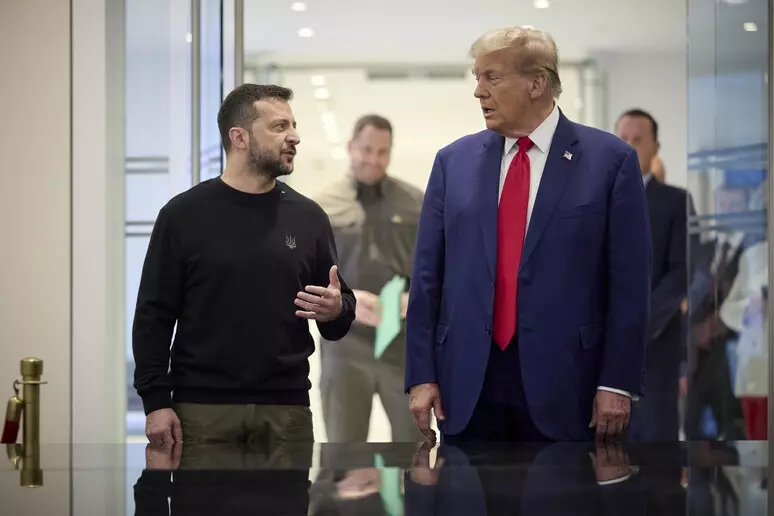
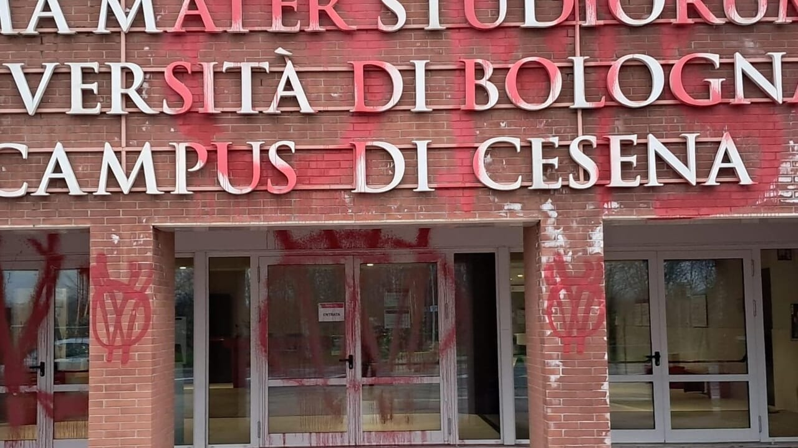
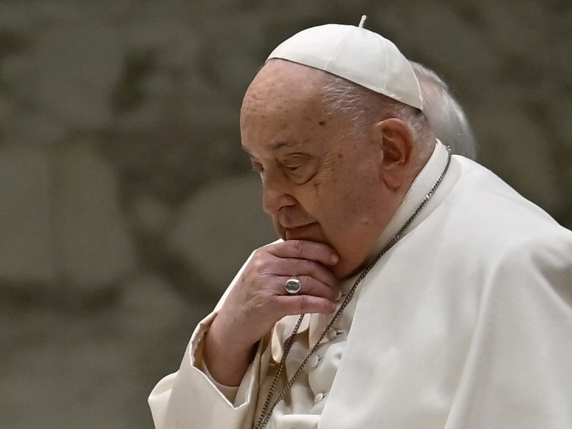

Rapporti e trattative tra USA e Ucraina
L’USA ha fornito all’Ucraina un totale di 120 miliardi nel corso di tutta la guerra e l’unione europea 115. Trump ha però solo di recente cominciato a scontrarsi con Zelensky per cominciare ad avere i soldi che ha speso. Infatti il 19 febbraio lo scontro diventa frontale: Trump denuncia Zelensky di essere un dittatore senza elezioni e Kiev di essere impopolare nel proprio paese.
Zelensky risponde dicendo che Trump “vive in uno spazio di disinformazione russa” e Trump risponde in un post rabbioso sulla sua piattaforma social Truth, chiamandolo dittatore e dicendo che farebbe meglio a muoversi in fretta, o non avrà più un paese.
Questi giorni inoltre procede la trattativa per le terre rare tra USA e Ucraina. Trump per chiudere l’accordo voleva 500 miliardi di dollari in terre rare, quantità fuori da ogni logica.
Infatti la produzione annuale di terre rare ammonta solo a 15 miliardi l’anno.
Gli USA non stanno infatti trattando solo per le terre rare, ma per tutte le materie prime critiche dell’Ucraina.
Dopo il no del presidente ucraino gli USA hanno rilanciato con una seconda bozza dell’accordo, sempre dal valore di 500 miliardi di dollari, chiedendo di rinunciare alla metà dei suoi introiti derivanti dalle risorse naturali, inclusi minerali, gas e petrolio.
Tutto questo senza alcuna delle garanzie richieste dal presidente ucraino. Come se non bastasse dovranno essere girati anche i guadagni provenienti da porti e altre infrastrutture.
Inoltre è girata anche la notizia che Elon Musk minaccia l’ucraina di togliere il servizio di Starlink, essenziale per accedere a Internet nei luoghi più remoti e fondamentale sul campo di battaglia, notizia negata da Elon Musk su un post su Truth.
Atti di vandalismo al campo universitario di Cesena
Nella notte tra martedì e mercoledì un gruppo di no vax ha imbrattato porte e muri esterni del campo universitario UNIBO di Cesena. Con bombolette spray di colore rosso acceso sono state scritte frasi contro il vaccino, le tecnologie legate alla rete 5G e l’intelligenza artificiale.
Il preside Mirko Viroli dice: “Siamo stati colti da un forte sgomento. un gesto del genere è arrivato inaspettato, senza che vi fossero mai state avvisaglie e per altro stona con l’immagine della nostra realtà che si è sempre caratterizzata per un clima lontano da tensioni. ora però è fondamentale lasciare spazio alla consapevolezza del fatto che ciò che facciamo qui è davvero importante. Dobbiamo rimboccarci ancora di più le maniche e continuare con impegno e determinazione lungo questa strada, che è quella giusta. Non ci lasciamo intimidire.“
Al momento le forze dell'ordine stanno cercando registrazioni delle telecamere in zona.
Molti studenti sono rimasti perplessi davanti alle scritte: “Non è facile andare a lezione oggi, perché prendersela con noi?”
L'intervento di pulizia è iniziato ma vista la gravità del danno servirà molto tempo per cancellare tutte le tracce delle bombolette.
Anche il sindaco di Cesena Enzo Lattuca dice la sua: “Le scritte sono gravissime e inaccettabili. Non tollereremo mai atti che alimentano odio, discriminazuione o tolleranza”
La salute del papa
Il papa è ormai malato da circa 3 settimane, avendo avuto il primo ricovero in ospedale il 14 febbraio. Nonostante questo le notizie hanno cominciato a venir fuori solo di recente, negli scorsi 10 giorni.
All’inizio si pensava che fosse solo una bronchite normale e che l’avrebbe superata, ma poi domenica scorsa 16 febbraio hanno confermato l’infezione delle vie respiratorie, nonostante gli esami di laboratorio riscontrassero il miglioramento di alcuni valori.
Gli venne prescritto un decorso di almeno cinque giorni di terapia antibiotica.
Martedì 18 più informazioni vengono girate su giornali e notiziari sulla sua situazione e sui suoi sintomi e il 19 si scopre che non ha solo una comune infezione, ma una polmonite bilaterale, confermata da una tac e sviluppata dalla bronchite acuta che aveva avuto le scorse settimane.
Nei giorni a seguire la situazione non è migliorata e domenica 23 febbraio la situazione peggiora drasticamente: oltre ai problemi respiratori anche un’anemia. le trasfusioni di sangue indicano, infatti, l’inizio della spesi, cioè il diffondersi dell’infezione dai polmoni al sangue, così grave che rischia il collasso dei polmoni e del cuore, fino perfino all’intubamento.
Il papa anche il 23 salta quindi l’Angelus come la domenica prima, ma ne scrive comunque il testo personalmente parlando del terzo anniversario della guerra in Ucraina e della sua situazione:
“Da parte mia, proseguo fiducioso il ricovero al Policlinico Gemelli, portando avanti le cure necessarie; e anche il riposo fa parte della terapia! Ringrazio di cuore i medici e gli operatori sanitari di questo Ospedale per l’attenzione che mi stanno dimostrando e per la dedizione con cui svolgono il loro servizio tra le persone malate.”
In questi giorni gli sono inoltre arrivate numerose lettere da bambini e ragazzi che gli augurano il meglio e lo ringraziano con parole e disegni che lui stesso ha ringraziato durante l’angelus:
“In questi giorni mi sono giunti tanti messaggi di affetto e mi hanno particolarmente colpito le lettere e i disegni dei bambini. Grazie per questa vicinanza e per le preghiere di conforto che ho ricevuto da tutto il mondo! Affido tutti all’intercessione di Maria e vi chiedo di pregare per me.”
I bambini non sono stati gli unici a preoccuparsi per il papa, infatti anche la premier Giorgia Meloni è andata personalmente a fare visita al papa, parlandogli per 20 minuti nei quali la meloni lo reputa “ironico, vigile e reattivo”.
Vista la situazione del papa, in america i cattolici di destra extraconservatori già cominciano a lavorare per organizzarsi, come se la sede petrina fosse già vacante, per fare eleggere un papa che vada contro le riforme bergogliane in caso di conclave.
Contro papa francesco già da tempo i conservatori lavorano per andare contro le sue riforme, come nel 2019, quando un «gruppo per un miglior governo della Chiesa» aveva presentato a possibili donatori un’operazione chiamata «Red hat report» che aveva un milione di budget per stilare «nel giro di due anni» un dossier per ogni cardinale elettore, puntando su accuse e voci di «abusi», «corruzione» eccetera. Uno degli obiettivi era modificare i profili Wikipedia dei cardinali: «Se l’avessimo fatto prima, forse non avremmo avuto papa Francesco».